Molby は分子動力学 (MD) 計算を実装しています。これは分子力学によるエネルギー最小化と同じ分子力場を使います。この機能は、パラメータのチェックなどの予備的な計算に使うことを想定しています。本格的な計算には、実績のある他のソフトウェアパッケージを使うことを強くおすすめします。
予備的な MD 計算の例を示します。また 2,2'-ジメトキシビフェニルを使います。第六段階と同様に、モデルを作成して分子力場パラメータを決定してください（原子上の部分電荷も）。
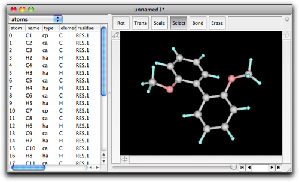
MM/MD メニューの "Molecular Dynamics" を選ぶと、設定ダイアログが開きます。このダイアログは分子力場によるエネルギー最小化の時と似ていますが、MD 計算に使う他のパラメータを表示しています。
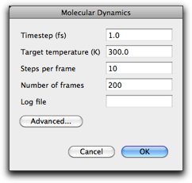
"Timestep" パラメータは、運動方程式を解くときの最小時間刻みを表します。"Target temperature" は系の温度を表します。MD 計算が始まる際に、すべての原子はこの温度に対応するボルツマン分布に従ってランダムな速度を与えられます。さらに、MD 計算中は温度が一定に保たれるように速度が調整されます。"Steps per frame" と "number of frames" パラメータは分子力学によるエネルギー最小化の時と同じ意味を持ちます。このスクリーンショットでは "steps per frame" が 10 になっています。これはエネルギー最小化では適切な値ですが、分子動力学の場合はもう少し大きな値（たとえば 100）の方がより適切です。
"Advanced..." ボタンを押すと、他のパラメータを持つ別のダイアログが開きます。これらのパラメータの意味は、内蔵 Ruby インタプリタのリファレンスで MDArena のページに書かれています。
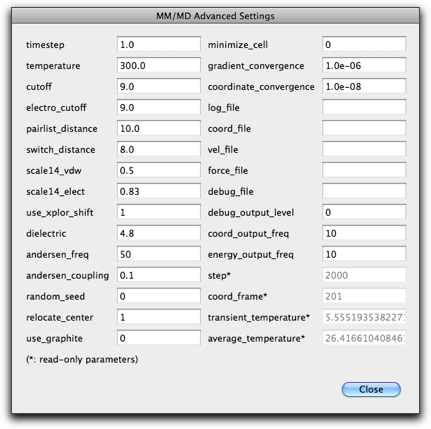
元の MD 設定ダイアログに戻り（詳細設定ダイアログで "Close" ボタンを押す）、"OK" を押します。MD 計算が始まり、新しいフレームが追加されて行きます。何か問題があったり、指定したフレーム数よりも前に計算を止めたいときは、コマンド-ピリオド (Mac) かコントロール-ピリオド (Windows) を使ってください。
本格的な計算を行うために、Molby で AMBER への入力ファイルを作成することができます。具体的には、SANDER モジュールの入力となる "prmtop" と "inpcrd" ファイルを作ることができます。
注： Molby が AMBER 付属のモデリングツールと同じ入力ファイルを作成する保証はありませんし、SANDER モジュールへの正しい入力になっている保証もありません。手作業で修正が必要な場合もあるかもしれません。
SANDER の入力ファイルを作るには、"MM/MD" メニューから "Create SANDER input..." コマンドを選んでください。
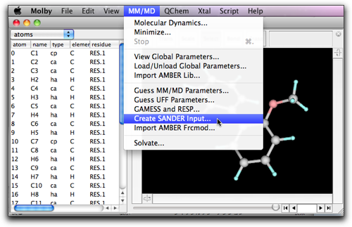
最初に "prmtop" ファイルの名前を聞かれます。必ず ".prmtop" 拡張子をつけるようにしてください。もう一つの "inpcrd" ファイルは、".prmtop" を ".inpcrd" に置き換えた名前で保存されます。
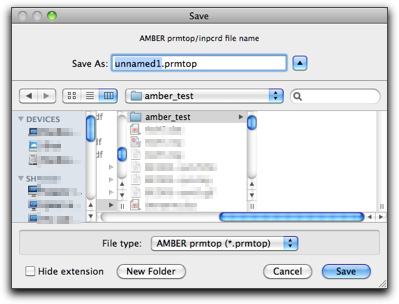
次に、prmtop ファイルの２つのバージョンのうち１つを選ぶように促されます。古い方、"AMBER8/NAMD" を使えば、NAMD ソフトウェアパッケージ（下記参照）でも使える入力ファイルができます。
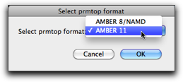
これで、SANDER が走るワークステーションにファイルを転送することができます。シミュレーションを実行するためには、SANDER の命令ファイルを作らなければなりませんが、AMBER をお使いの方ならやり方はよくご存知でしょう。
計算が終了したら、トラジェクトリファイル ("mdcrd" ファイル) を取得して、Molby にインポートすることができます。"File" メニューの "Import..." コマンドを選び、ファイルタイプとして "AMBER mdcrd file (*.crd; *.mdcrd)" を選んで、ファイルを読み込んでください。
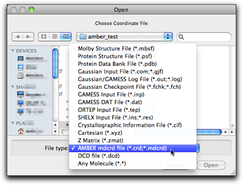
本格的な計算を行うために NAMD を使うこともできます。NAMD はイリノイ大学アーバナ・シャンペーン校の理論生物物理グループが開発したソフトウェアパッケージです。公式ウェブサイトは http://www.ks.uiuc.edu/Research/namd/ です。NAMD は AMBER の "prmtop" を入力として使うことができます（amber yes 命令を使う）。詳しくは NAMD のユーザーズガイドをご覧ください。
NAMD の出力の dcd ファイルもインポートが可能です。"Import..." コマンドのファイルタイプで選択することができます。
明示的な溶媒中での MD シミュレーションを行うためには、目的分子の回りに溶媒分子の箱を作る必要があります。Molby でこのような溶媒和構造を作成することができます。
溶媒和構造を作るためには、まず使用する溶媒の箱を読み込む必要があります。以下の溶媒の箱が Molby に同梱されており、"File" → "Open Predefined" → "Solvent boxes" サブメニューから選ぶことができます。Tip3box は AmberTool パッケージから得たものであり、他の溶媒箱は Amber parameter database で公開されているものです。
| name | solvent | reference |
|---|---|---|
| tip3pbox | water | Jorgensen, W. L.; Chandrasekhar, J.; Madura, J.; Klein, M. L. J. Chem. Phys. 1983, 79, 926. |
| chcl3box | chloroform | Cieplak, P.; Caldwell, J. W.; Kollman, P. A. J. Comp. Chem. 2001, 22, 1048. |
| dmsobox | dimethylsulfoxide | Fox, T.; Kollman, P. A. J. Phys. Chem. B 1998, 102, 8070. |
| meohbox | methanol | Caldwell, J. W.; Kollman, P. A. J. Phys. Chem. 1995, 99, 6208. |
| nmabox | N-methylacetamide | Caldwell, J. W.; Kollman, P. A. J. Phys. Chem. 1995, 99, 6208. |
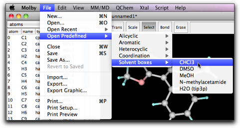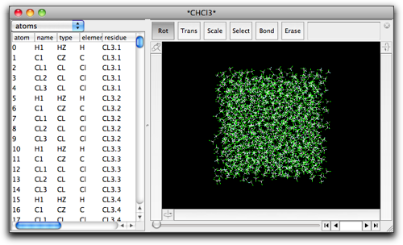
溶媒箱を開いたまま、目的とする分子（溶質）を新しいウィンドウで開くか作成します。溶質分子のウィンドウを最前面にした状態で、"MM/MD" メニューから "Solvate..." コマンドを選びます。
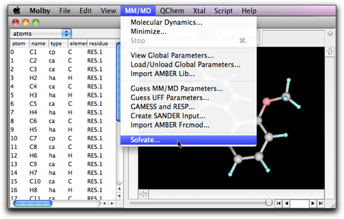
ダイアログが開きます。
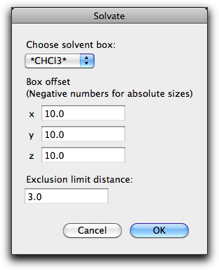
ポップアップメニュー "Choose solvent box:" には、さきほど開いた溶媒箱がリストされているはずです。注意していただきたいのは、このポップアップメニューには周期境界（または単位格子）を持つすべての分子がリストされることです。このため、紛らわしいことに、別の溶媒和構造を同時に開いていると、その構造もこのポップアップメニューに登場してしまいます（溶媒和構造は必ず周期境界を持っていますから）。ですから、正しい溶媒箱を選ぶように十分に注意してください。
"Open Predefined" メニューから選んで開いた溶媒箱はすぐに区別できます。名前の前後に * がついているからです ("*CHCl3*" のように）。
"Box offset" パラメータは、溶質分子の回りを囲む溶媒層の厚さを指定します。言い換えると、これから作成する溶媒和構造の周期境界は次のように決められます：まず溶質を囲む最小の直方体を算出し、それぞれの面を外側に向かって Box offsect パラメータ分だけ移動させます。一方、x, y, z のそれぞれの方向に対して、周期境界の大きさを決めたい場合もあります。このときは、その方向の Box offset パラメータに負の値を指定してください。（たとえば、x 方向の周期境界を大きさを 40 Å にしたい時は、"Box offset" の最初のパラメータを -40 にしてください。）
周期境界の箱の大きさは、"Xtal" → "Define Unit Cell" メニューを選ぶと見ることができます。また、属性テーブルの "unit cell" でも見られます。
"Exclusion limit distance" は、溶質分子と溶媒分子の原子間距離の最小値を定めます。溶媒分子のある原子が溶質分子からこの距離以内に近づいているとき、その溶媒分子は取り除かれます。